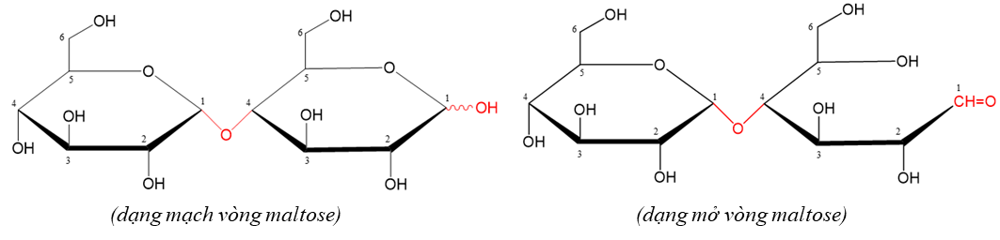

Mục lục
Giới thiệu carbohydrate · Glucose và fructose
Học xong bài này em cần: nêu được khái niệm, cách phân loại carbohydrate; viết được cấu tạo mạch hở, mạch vòng của glucose và fructose; trình bày được tính chất hóa học, ứng dụng của glucose và fructose.
I. Giới thiệu về carbohydrate
Carbohydrate là những hợp chất hữu cơ tạp chức, thường có công thức chung là C_{n}(H2O)_{m}. Ví dụ: glucose C6H12O6 = C6(H2O)6; saccharose C12H22O11 = C12(H2O)11; tinh bột (C6H10O5)_{n} = [C6(H2O)5]_{n}.
Monosaccharide
- Carbohydrate đơn giản nhất, không bị thủy phân
- Glucose, fructose: C6H12O6
Disaccharide
- Thủy phân: 1 phân tử → 2 phân tử monosaccharide
- Saccharose, maltose: C12H22O11
Polysaccharide
- Thủy phân đến cùng: 1 phân tử → nhiều phân tử monosaccharide
- Tinh bột, cellulose: (C6H10O5)_{n}
II. Glucose
1. Trạng thái tự nhiên và tính chất vật lí
- Glucose có trong hầu hết các bộ phận của cây (lá, hoa, rễ…), nhiều nhất trong quả chín, đặc biệt là quả nho chín nên còn gọi là đường nho. Mật ong chứa khoảng 30% glucose.
- Trong máu người có một lượng nhỏ glucose, nồng độ hầu như không đổi (khoảng 0,1%).
- Glucose là chất rắn, dạng tinh thể không màu, dễ tan trong nước, có vị ngọt nhưng không ngọt bằng đường mía.
2. Cấu tạo phân tử
Công thức phân tử: C6H12O6.
Dạng mạch hở: HOCH2–CHOH–CHOH–CHOH–CHOH–CHO, viết gọn HOCH2[CHOH]4CHO. Glucose là hợp chất tạp chức, có 5 nhóm –OH và 1 nhóm –CHO (aldehyde).
Dạng mạch vòng: nhóm –OH ở C#5 cộng vào nhóm C=O ở C#1 tạo vòng 6 cạnh. Nhóm –OH mới sinh ra ở C#1 gọi là nhóm –OH hemiacetal. Nếu nhóm này nằm dưới mặt phẳng vòng ta có α-glucose, nằm trên mặt phẳng vòng ta có β-glucose.
- Khử hoàn toàn glucose thu được hexane → 6 nguyên tử C tạo mạch không phân nhánh.
- Glucose có phản ứng tráng bạc → có nhóm –CHO.
- Glucose hòa tan Cu(OH)2 tạo dung dịch xanh lam → có nhiều nhóm –OH liền kề.
- Glucose tạo ester chứa 5 gốc acetate → phân tử có 5 nhóm –OH.
Mạch hở ⇄ mạch vòng
Chọn glucose hoặc fructose, rồi chuyển giữa dạng mạch hở, vòng α và vòng β để thấy nhóm –OH nào đóng vòng và nhóm –OH hemiacetal nằm ở đâu.
3. Tính chất hóa học
Glucose có tính chất của polyalcohol (nhiều nhóm –OH liền kề), của aldehyde (nhóm –CHO), của nhóm –OH hemiacetal và có phản ứng lên men.
a) Tính chất của polyalcohol: phản ứng với Cu(OH)2
Ở nhiệt độ thường, dung dịch glucose hòa tan Cu(OH)2 tạo dung dịch màu xanh lam:
Thí nghiệm: cho vào ống nghiệm vài giọt dung dịch CuSO4 5% và khoảng 1 mL dung dịch NaOH 10%, lắc nhẹ tạo kết tủa Cu(OH)2 màu xanh (CuSO4 + 2NaOH → Cu(OH)2↓ + Na2SO4). Thêm khoảng 2 mL dung dịch glucose 2%, lắc đều: kết tủa tan, dung dịch có màu xanh lam.
b) Tính chất của aldehyde
Phản ứng với thuốc thử Tollens (phản ứng tráng bạc):
Thí nghiệm: cho khoảng 1 mL dung dịch AgNO3 1% vào ống nghiệm sạch, nhỏ từ từ dung dịch NH3 đến khi kết tủa tan hết (thu được thuốc thử Tollens). Thêm khoảng 1 mL dung dịch glucose rồi ngâm ống nghiệm vào cốc nước nóng: thành ống nghiệm xuất hiện lớp bạc sáng như gương.
Phản ứng với Cu(OH)2 trong môi trường kiềm, đun nóng: tạo kết tủa đỏ gạch Cu2O.
Làm mất màu nước bromine:
c) Phản ứng của nhóm –OH hemiacetal
Khi có HCl khan làm xúc tác, nhóm –OH hemiacetal ở dạng mạch vòng phản ứng với methanol tạo methyl glucoside. Khi đó vòng không mở ra được nữa.
d) Phản ứng lên men
e) Glucose trong cơ thể và trong cây xanh
4. Ứng dụng và điều chế
- Ứng dụng: chất dinh dưỡng có giá trị; dùng làm thuốc tăng lực, dịch truyền (huyết thanh glucose); tráng gương, tráng ruột phích; nguyên liệu sản xuất ethanol (rượu, nhiên liệu sinh học), vitamin C, sorbitol…
- Điều chế trong công nghiệp: thủy phân tinh bột (xúc tác acid hoặc enzyme), hoặc thủy phân cellulose (vỏ bào, mùn cưa) nhờ acid HCl đặc.
III. Fructose
1. Trạng thái tự nhiên và tính chất vật lí
- Fructose có nhiều trong các loại quả ngọt như dứa, xoài, đặc biệt trong mật ong (khoảng 40%), làm mật ong có vị ngọt sắc.
- Fructose là chất rắn kết tinh, không màu, dễ tan trong nước, ngọt hơn đường mía.
2. Cấu tạo phân tử
Công thức phân tử C6H12O6, là đồng phân của glucose.
Dạng mạch hở: HOCH2–CHOH–CHOH–CHOH–CO–CH2OH, viết gọn HOCH2[CHOH]3COCH2OH: có 5 nhóm –OH và 1 nhóm C=O (ketone) ở C#2.
Dạng mạch vòng: nhóm –OH ở C#5 cộng vào nhóm C=O ở C#2 tạo vòng 5 cạnh, gồm hai dạng α-fructose và β-fructose (khác nhau ở vị trí nhóm –OH hemiketal ở C#2).
3. Tính chất hóa học
- Tính chất của polyalcohol: hòa tan Cu(OH)2 ở nhiệt độ thường tạo dung dịch xanh lam: 2C6H12O6 + Cu(OH)2 → (C6H11O6)2Cu + 2H2O.
- Trong môi trường kiềm, fructose chuyển hóa thành glucose nên fructose cũng có phản ứng tráng bạc và khử Cu(OH)2/OH^{–} khi đun nóng tạo kết tủa đỏ gạch Cu2O.
- Fructose không làm mất màu nước bromine (không có nhóm –CHO, môi trường không phải kiềm nên không chuyển thành glucose).
4. Ứng dụng
Fructose được dùng làm chất tạo ngọt trong thực phẩm và đồ uống (siro fructose, nước giải khát…).
| So sánh | Glucose | Fructose |
|---|---|---|
| Công thức phân tử | C6H12O6 | C6H12O6 (đồng phân của glucose) |
| Dạng mạch hở | HOCH2[CHOH]4CHO, có nhóm –CHO | HOCH2[CHOH]3COCH2OH, có nhóm C=O ở C#2 |
| Dạng mạch vòng | Vòng 6 cạnh: α-glucose, β-glucose | Vòng 5 cạnh: α-fructose, β-fructose |
| Cu(OH)2, nhiệt độ thường | Dung dịch xanh lam | Dung dịch xanh lam |
| Tollens; Cu(OH)2/OH^{–}, t° | Có: Ag↓; Cu2O↓ đỏ gạch | Có (chuyển thành glucose trong môi trường kiềm) |
| Nước bromine | Mất màu | Không mất màu |
| Có nhiều trong | Quả nho chín (đường nho), mật ong (khoảng 30%) | Quả ngọt, mật ong (khoảng 40%) |
| Độ ngọt | Kém đường mía | Ngọt hơn đường mía |
Tự kiểm tra Bài 4
Câu 1Carbohydrate nhất thiết phải chứa nhóm chức của
- ketone.
- aldehyde.
- amine.
- alcohol.
Câu 2Chất nào sau đây là monosaccharide?
- Saccharose.
- Fructose.
- Tinh bột.
- Cellulose.
Câu 3Chất nào sau đây là đồng phân của glucose?
- Tinh bột.
- Fructose.
- Cellulose.
- Saccharose.
Câu 4Glucose có nhiều trong quả nho chín nên còn được gọi là
- đường mía.
- đường nho.
- đường mạch nha.
- đường phèn.
Câu 5Để chứng minh trong phân tử glucose có nhiều nhóm hydroxyl, người ta cho dung dịch glucose phản ứng với
- Cu(OH)2 ở nhiệt độ thường.
- Cu(OH)2 trong NaOH, đun nóng.
- kim loại Na.
- AgNO3 trong dung dịch NH3, đun nóng.
Câu 6Thuốc thử dùng để phân biệt dung dịch glucose và dung dịch fructose là
- Cu(OH)2.
- AgNO3/NH3.
- nước bromine.
- dung dịch NaOH.
Câu 7Trong dung dịch, glucose tồn tại chủ yếu ở dạng
- mạch hở.
- mạch vòng α và β.
- mạch vòng 5 cạnh.
- polymer.
Câu 8Lên men hoàn toàn 1 mol glucose (hiệu suất 100%) thu được bao nhiêu mol ethanol?
- 1.
- 2.
- 3.
- 0,5.
Câu 9Cho 9 g glucose phản ứng hoàn toàn với lượng dư thuốc thử Tollens. Khối lượng Ag thu được là
- 5,4 g.
- 10,8 g.
- 21,6 g.
- 2,7 g.
Câu 10Glucose không có phản ứng nào sau đây?
- Tráng bạc.
- Thủy phân.
- Lên men.
- Hòa tan Cu(OH)2.
Đúng / SaiChọn Đúng hoặc Sai cho từng phát biểu.
- Glucose và fructose đều tham gia phản ứng tráng bạc.Đúng. Fructose chuyển thành glucose trong môi trường kiềm của thuốc thử Tollens.
- Fructose làm mất màu nước bromine.Sai. Chỉ glucose làm mất màu nước bromine.
- Nhóm –OH hemiacetal của glucose gắn ở nguyên tử C#1.Đúng.
- Phân tử fructose dạng mạch hở có nhóm –CHO.Sai. Fructose có nhóm C=O (ketone) ở C#2.
- Trong máu người, nồng độ glucose khoảng 0,1% và hầu như không đổi.Đúng.
Saccharose và maltose
Học xong bài này em cần: nêu được trạng thái tự nhiên, cấu tạo của saccharose và maltose; giải thích được vì sao maltose có tính khử còn saccharose thì không; viết được phản ứng thủy phân và phản ứng với Cu(OH)2.
I. Saccharose
1. Trạng thái tự nhiên và tính chất vật lí
- Saccharose có trong nhiều loài thực vật, nhiều nhất trong cây mía, củ cải đường và hoa thốt nốt nên còn gọi là đường mía. Sản phẩm có nhiều dạng: đường kính, đường cát, đường phèn, đường thốt nốt…
- Saccharose là chất rắn kết tinh, không màu, không mùi, có vị ngọt, dễ tan trong nước, nóng chảy ở khoảng 185 °C.
2. Cấu tạo phân tử
Công thức phân tử C12H22O11. Phân tử saccharose gồm 1 gốc α-glucose và 1 gốc β-fructose liên kết với nhau qua nguyên tử oxygen giữa C#1 của gốc glucose và C#2 của gốc fructose (liên kết α-1,2-glycoside).
3. Tính chất hóa học
Tính chất của polyalcohol: hòa tan Cu(OH)2 ở nhiệt độ thường tạo dung dịch màu xanh lam.
Phản ứng thủy phân (xúc tác acid hoặc enzyme): sản phẩm gồm glucose và fructose, nên dung dịch sau thủy phân có phản ứng tráng bạc.
4. Sản xuất và ứng dụng
Sản xuất đường từ cây mía:
- Ép mía lấy nước mía (chứa khoảng 12 – 15% đường).
- Cho vôi sữa Ca(OH)2 vào nước mía, đun nóng để làm kết tủa các tạp chất; lọc bỏ tạp chất.
- Sục khí CO2 vào để loại bỏ calcium dưới dạng CaCO3 kết tủa; lọc.
- Tẩy màu dung dịch đường bằng SO2 (hoặc than hoạt tính).
- Cô đặc dung dịch ở áp suất thấp, để kết tinh rồi li tâm thu đường kính. Phần nước còn lại là rỉ đường, dùng để sản xuất rượu, nuôi vi sinh vật…
Ứng dụng: saccharose là thực phẩm quan trọng (đường ăn), nguyên liệu cho công nghiệp thực phẩm (bánh kẹo, nước giải khát, đồ hộp), pha chế thuốc dạng siro; thủy phân saccharose tạo glucose, fructose dùng tráng gương, tráng ruột phích.
II. Maltose
1. Trạng thái tự nhiên
Maltose (đường mạch nha) có trong mạch nha (hạt ngũ cốc nảy mầm), được tạo thành khi thủy phân tinh bột nhờ enzyme amylase (có trong nước bọt, mầm lúa). Maltose là chất rắn kết tinh, dễ tan trong nước, có vị ngọt.
2. Cấu tạo phân tử
Công thức phân tử C12H22O11, là đồng phân của saccharose. Phân tử maltose gồm 2 gốc α-glucose liên kết với nhau qua nguyên tử oxygen giữa C#1 của gốc thứ nhất và C#4 của gốc thứ hai (liên kết α-1,4-glycoside).
Gốc glucose thứ hai còn nhóm –OH hemiacetal nên vòng có thể mở ra tạo nhóm –CHO.

3. Tính chất hóa học và ứng dụng
- Tính chất của polyalcohol: hòa tan Cu(OH)2 ở nhiệt độ thường tạo dung dịch xanh lam.
- Tính khử (do mở vòng tạo nhóm –CHO): tráng bạc (1 mol maltose → 2 mol Ag), khử Cu(OH)2/OH^{–} khi đun nóng tạo Cu2O đỏ gạch, làm mất màu nước bromine.
- Phản ứng thủy phân: tạo ra glucose.
Ứng dụng: maltose được dùng sản xuất kẹo mạch nha, bánh, đồ uống.
| So sánh | Saccharose | Maltose |
|---|---|---|
| Công thức phân tử | C12H22O11 (đồng phân của nhau) | |
| Cấu tạo | α-glucose + β-fructose, liên kết α-1,2-glycoside | 2 gốc α-glucose, liên kết α-1,4-glycoside |
| Nhóm –OH hemiacetal | Không còn | Còn 1 nhóm (ở gốc glucose thứ hai) |
| Cu(OH)2, nhiệt độ thường | Dung dịch xanh lam | Dung dịch xanh lam |
| Tollens; Cu(OH)2/OH^{–}, t° | Không phản ứng | Có: Ag↓; Cu2O↓ |
| Nước bromine | Không mất màu | Mất màu |
| Sản phẩm thủy phân | Glucose + fructose | Chỉ có glucose |
| Tên thường gọi | Đường mía | Đường mạch nha |
Tự kiểm tra Bài 5
Câu 1Saccharose có nhiều trong
- quả nho chín.
- cây mía, củ cải đường.
- mạch nha.
- mật ong.
Câu 2Thủy phân hoàn toàn saccharose thu được
- glucose.
- glucose và fructose.
- fructose.
- maltose.
Câu 3Phân tử maltose được tạo bởi
- 2 gốc α-glucose.
- 1 gốc α-glucose và 1 gốc β-fructose.
- 2 gốc β-glucose.
- 2 gốc fructose.
Câu 4Chất nào sau đây không tham gia phản ứng tráng bạc?
- Glucose.
- Fructose.
- Maltose.
- Saccharose.
Câu 5Hai gốc monosaccharide trong phân tử saccharose liên kết với nhau bằng
- liên kết α-1,4-glycoside.
- liên kết α-1,6-glycoside.
- liên kết α-1,2-glycoside.
- liên kết β-1,4-glycoside.
Câu 6Thủy phân hoàn toàn 34,2 g saccharose, lấy toàn bộ sản phẩm cho phản ứng tráng bạc hoàn toàn thu được m gam Ag. Giá trị của m là
- 21,6.
- 43,2.
- 10,8.
- 32,4.
Câu 7Dãy gồm các chất đều hòa tan Cu(OH)2 ở nhiệt độ thường tạo dung dịch xanh lam là
- glucose, saccharose, maltose.
- glucose, tinh bột, cellulose.
- saccharose, tinh bột, ethanol.
- fructose, cellulose, maltose.
Đúng / SaiChọn Đúng hoặc Sai cho từng phát biểu.
- Saccharose và maltose là đồng phân của nhau.Đúng, cùng công thức C12H22O11.
- Saccharose có phản ứng tráng bạc.Sai. Saccharose không có tính khử.
- Maltose còn nhóm –OH hemiacetal nên có tính khử.Đúng.
- Thủy phân maltose chỉ thu được glucose.Đúng.
Tinh bột và cellulose
Học xong bài này em cần: nêu được trạng thái tự nhiên, tính chất vật lí, cấu tạo của tinh bột và cellulose; trình bày được phản ứng thủy phân, phản ứng màu với iodine của tinh bột, phản ứng với nitric acid và nước Schweizer của cellulose; nêu được ứng dụng của chúng.
I. Tinh bột
1. Trạng thái tự nhiên và tính chất vật lí
- Tinh bột có nhiều trong các loại hạt (gạo, lúa mì, ngô…), củ (khoai, sắn…) và quả (chuối xanh, táo…).
- Tinh bột là chất rắn vô định hình, màu trắng, không tan trong nước lạnh. Trong nước nóng, hạt tinh bột ngậm nước và trương phồng lên tạo thành dung dịch keo gọi là hồ tinh bột.
2. Cấu tạo phân tử
Tinh bột có công thức (C6H10O5)_{n}, là hỗn hợp của hai polysaccharide là amylose và amylopectin, đều được tạo thành từ các gốc α-glucose.
- Amylose (khoảng 20 – 30%): các gốc α-glucose liên kết với nhau bằng liên kết α-1,4-glycoside tạo mạch không phân nhánh, cuộn xoắn lò xo (mỗi vòng xoắn khoảng 6 gốc glucose).
- Amylopectin (khoảng 70 – 80%): mạch phân nhánh. Các gốc α-glucose nối với nhau bằng liên kết α-1,4-glycoside tạo thành chuỗi; ở chỗ phân nhánh là liên kết α-1,6-glycoside (mỗi nhánh khoảng 20 – 30 gốc glucose).
3. Tính chất hóa học
a) Phản ứng thủy phân
Trong cơ thể, tinh bột bị thủy phân dần nhờ enzyme:
b) Phản ứng màu với iodine
Nhỏ dung dịch iodine vào hồ tinh bột thấy xuất hiện màu xanh tím. Khi đun nóng, màu xanh tím biến mất; để nguội, màu xanh tím xuất hiện trở lại.
Giải thích: iodine bị giữ lại trong lòng mạch xoắn của amylose tạo hợp chất màu xanh tím; khi đun nóng, mạch duỗi ra giải phóng iodine nên mất màu.
4. Sự tạo thành và chuyển hóa tinh bột
Trong cây xanh: tinh bột được tạo thành nhờ quá trình quang hợp.
Trong cơ thể người:
5. Ứng dụng
Tinh bột là lương thực chính của con người; là nguyên liệu sản xuất glucose, ethanol (rượu, nhiên liệu sinh học), hồ dán, bánh kẹo…
II. Cellulose
1. Trạng thái tự nhiên và tính chất vật lí
- Cellulose là thành phần chính tạo nên màng tế bào thực vật, bộ khung của cây. Cellulose có nhiều trong bông nõn (95 – 98%), đay, gai, tre, nứa (50 – 80%), gỗ (40 – 50%).
- Cellulose là chất rắn dạng sợi, màu trắng, không mùi, không vị; không tan trong nước và các dung môi hữu cơ thông thường (ethanol, ether, benzene…) nhưng tan trong nước Schweizer [Cu(NH3)4](OH)2 (dung dịch Cu(OH)2 trong NH3).
2. Cấu tạo phân tử
Cellulose có công thức (C6H10O5)_{n}, là polymer mạch không phân nhánh, không xoắn, gồm các gốc β-glucose liên kết với nhau bằng liên kết β-1,4-glycoside. Các mạch xếp song song và liên kết hydrogen với nhau tạo thành sợi bền.
Mỗi mắt xích C6H10O5 có 3 nhóm –OH tự do nên có thể viết công thức cellulose là [C6H7O2(OH)3]_{n}.
3. Tính chất hóa học
a) Phản ứng thủy phân
Trong dạ dày động vật nhai lại (trâu, bò…) có enzyme cellulase thủy phân được cellulose. Con người không tiêu hóa được cellulose, nhưng chất xơ giúp hệ tiêu hóa hoạt động tốt.
b) Phản ứng với nitric acid
Cellulose trinitrate rất dễ cháy và nổ mạnh, không sinh khói, được dùng làm thuốc súng không khói.
c) Phản ứng với nước Schweizer
Cellulose tan trong nước Schweizer tạo dung dịch nhớt, được dùng để sản xuất tơ. Cellulose không có phản ứng tráng bạc và không có phản ứng màu với iodine.
4. Ứng dụng
- Sản xuất giấy, vải sợi (bông, đay, lanh), vật liệu xây dựng, đồ gỗ.
- Chế biến thành tơ visco, tơ cellulose acetate (tơ bán tổng hợp) và thuốc súng không khói (cellulose trinitrate).
- Sản xuất ethanol sinh học từ rơm rạ, mùn cưa, bã mía (nhiên liệu sinh học).
| So sánh | Tinh bột | Cellulose |
|---|---|---|
| Công thức | (C6H10O5)_{n} | (C6H10O5)_{n} hay [C6H7O2(OH)3]_{n} |
| Mắt xích | α-glucose | β-glucose |
| Liên kết | α-1,4-glycoside; thêm α-1,6-glycoside ở chỗ phân nhánh (amylopectin) | β-1,4-glycoside |
| Cấu trúc | Amylose xoắn lò xo; amylopectin phân nhánh | Mạch thẳng, không phân nhánh, xếp thành sợi |
| Tính tan | Không tan trong nước lạnh; trong nước nóng tạo hồ tinh bột | Không tan trong nước kể cả khi đun nóng; tan trong nước Schweizer |
| Thủy phân | Tạo glucose | Tạo glucose |
| Với iodine | Màu xanh tím | Không |
| Với HNO3 đặc (H2SO4 đặc) | – | Tạo cellulose trinitrate |
| Vai trò | Chất dự trữ năng lượng của thực vật, lương thực | Bộ khung tế bào thực vật, sợi, giấy |
Tự kiểm tra Bài 6
Câu 1Polysaccharide có trong thành phần của tinh bột và có cấu trúc mạch không phân nhánh là
- amylopectin.
- glucose.
- saccharose.
- amylose.
Câu 2Carbohydrate chứa đồng thời liên kết α-1,4-glycoside và liên kết α-1,6-glycoside trong phân tử là
- tinh bột.
- cellulose.
- saccharose.
- fructose.
Câu 3Chất nào sau đây là nguyên liệu để sản xuất tơ visco?
- Saccharose.
- Tinh bột.
- Glucose.
- Cellulose.
Câu 4Công thức của cellulose là
- (C6H10O5)_{n}.
- C12H22O11.
- C6H12O6.
- C2H4O2.
Câu 5Nhỏ dung dịch iodine vào hồ tinh bột, thấy xuất hiện màu
- đỏ gạch.
- xanh tím.
- xanh lam.
- vàng.
Câu 6Cellulose tan được trong
- nước nóng.
- ethanol.
- nước Schweizer.
- benzene.
Câu 7Mỗi mắt xích C6H10O5 của cellulose có bao nhiêu nhóm –OH tự do?
- 2.
- 3.
- 4.
- 5.
Câu 8Thủy phân hoàn toàn 16,2 g tinh bột, khối lượng glucose thu được là
- 18 g.
- 16,2 g.
- 9 g.
- 36 g.
Đúng / SaiChọn Đúng hoặc Sai cho từng phát biểu.
- Tinh bột và cellulose là đồng phân của nhau.Sai. Giá trị n và cấu tạo khác nhau.
- Amylopectin có cấu trúc mạch phân nhánh.Đúng.
- Cellulose tham gia phản ứng tráng bạc.Sai. Cellulose không có nhóm –CHO tự do.
- Cellulose trinitrate được dùng làm thuốc súng không khói.Đúng.
- Khi đun nóng, màu xanh tím của hồ tinh bột với iodine biến mất.Đúng; để nguội màu xanh tím xuất hiện trở lại.
Ôn tập chương 2
I. Hệ thống hóa kiến thức
Monosaccharide
- Glucose HOCH2[CHOH]4CHO: vòng 6 cạnh α, β
- Fructose HOCH2[CHOH]3COCH2OH: vòng 5 cạnh α, β
- Không bị thủy phân
Disaccharide
- Saccharose: α-glucose + β-fructose (α-1,2), không có tính khử
- Maltose: 2 α-glucose (α-1,4), có tính khử
- Thủy phân tạo monosaccharide
Polysaccharide
- Tinh bột: amylose (xoắn) + amylopectin (phân nhánh), α-glucose
- Cellulose: mạch thẳng, β-glucose, [C6H7O2(OH)3]_{n}
- Thủy phân hoàn toàn tạo glucose
Tính chất polyalcohol
- Hòa tan Cu(OH)2 → dung dịch xanh lam
- Glucose, fructose, saccharose, maltose
Tính khử
- Có nhóm –CHO hoặc –OH hemiacetal mở vòng được
- Tráng bạc, khử Cu(OH)2/OH^{–} (t°)
- Glucose, fructose, maltose
Phản ứng riêng
- Glucose, maltose làm mất màu nước bromine
- Tinh bột + iodine → xanh tím
- Cellulose + HNO3 → cellulose trinitrate
- Glucose lên men → ethanol
| Tính chất | Glucose | Fructose | Saccharose | Maltose | Tinh bột | Cellulose |
|---|---|---|---|---|---|---|
| Loại | Mono | Mono | Di | Di | Poly | Poly |
| Công thức | C6H12O6 | C6H12O6 | C12H22O11 | C12H22O11 | (C6H10O5)_{n} | (C6H10O5)_{n} |
| Tan trong nước | Tan | Tan | Tan | Tan | Nước nóng → hồ | Không tan |
| Cu(OH)2, t° thường | Xanh lam | Xanh lam | Xanh lam | Xanh lam | – | – |
| Tráng bạc; Cu(OH)2/OH^{–}, t° | Có | Có | Không | Có | Không | Không |
| Nước bromine | Mất màu | – | – | Mất màu | – | – |
| Thủy phân | Không | Không | Glucose + fructose | Glucose | Glucose | Glucose |
| Phản ứng riêng | Lên men rượu | Chuyển thành glucose trong kiềm | – | – | Iodine → xanh tím | HNO3 → cellulose trinitrate |
II. Nhận biết các carbohydrate
| Thuốc thử | Nhận ra | Hiện tượng |
|---|---|---|
| Cu(OH)2, nhiệt độ thường | Glucose, fructose, saccharose, maltose | Kết tủa tan, dung dịch xanh lam |
| Cu(OH)2/OH^{–}, đun nóng | Glucose, fructose, maltose | Kết tủa đỏ gạch Cu2O |
| Thuốc thử Tollens, đun nóng | Glucose, fructose, maltose | Lớp bạc sáng bám thành ống nghiệm |
| Nước bromine | Glucose, maltose (phân biệt glucose với fructose) | Mất màu vàng da cam của nước bromine |
| Dung dịch iodine | Tinh bột | Màu xanh tím |
| Thủy phân rồi thử Tollens | Saccharose (so với chất không thủy phân, không tráng bạc) | Sau thủy phân mới tráng bạc |
Bàn thí nghiệm nhận biết
Chọn một chất và một thuốc thử để xem hiện tượng trong ống nghiệm, phương trình phản ứng và giải thích. Bảng tổng hợp bên dưới giúp nhìn tất cả trường hợp cùng lúc.
III. Công thức bỏ túi
| Dạng | Công thức, mối liên hệ cần nhớ |
|---|---|
| Tráng bạc | Glucose, fructose → 2Ag; maltose → 2Ag; saccharose không tráng bạc. Thủy phân rồi tráng bạc: saccharose → 4Ag; maltose → 4Ag; mắt xích C6H10O5 → 2Ag |
| Thủy phân chưa hoàn toàn rồi tráng bạc | Saccharose: n_{Ag} = 4n·H (phần dư không tráng bạc). Maltose: n_{Ag} = 4n·H + 2n(1 − H) (phần maltose dư vẫn tráng bạc) |
| Khử Cu(OH)2/OH^{–}, t° | 1 glucose (fructose, maltose) → 1 Cu2O |
| Nước bromine | n_{glucose} = n_{Br2} (fructose không phản ứng) |
| Hòa tan Cu(OH)2 | 2 phân tử đường : 1 Cu(OH)2 |
| Lên men rượu | C6H12O6 → 2C2H5OH + 2CO2: 180 g glucose → 92 g ethanol + 88 g CO2 |
| Tinh bột, cellulose → glucose | 162 g (1 mắt xích) → 180 g glucose → 92 g ethanol |
| Hiệu suất nhiều giai đoạn | H = H_{1} × H_{2} × …; m_{sản phẩm} = m_{lí thuyết} × H; m_{nguyên liệu cần} = m_{lí thuyết} : H |
| CO2 hấp thụ vào Ca(OH)2 | Ca(OH)2 dư: n_{CO2} = n_{CaCO3}. Nếu đun nóng dung dịch lại thu thêm kết tủa: n_{CO2} = n_{↓ lần 1} + 2n_{↓ lần 2} |
| Độ rượu | Độ rượu = V_{ethanol nguyên chất} : V_{dung dịch rượu} × 100; m_{ethanol} = V × D (D = 0,8 g/mL) |
| Cellulose trinitrate | 162 g cellulose → 297 g cellulose trinitrate, cần 3 × 63 = 189 g HNO3 (tính cho mỗi mắt xích) |
| Quang hợp | 6CO2 + 6H2O → C6H12O6 + 6O2; 6nCO2 + 5nH2O → (C6H10O5)_{n} + 6nO2 |
| Đốt cháy carbohydrate C_{n}(H2O)_{m} | n_{O2} = n_{CO2} |
| M thường gặp | glucose, fructose 180 · saccharose, maltose 342 · mắt xích C6H10O5 162 · mắt xích cellulose trinitrate 297 |
Máy tính bài toán carbohydrate
Chọn dạng bài, nhập số liệu: máy giải từng bước (tinh bột → ethanol nhiều giai đoạn, lên men glucose, tráng bạc, sản xuất cellulose trinitrate).
IV. Các dạng bài tập thường gặp
Dạng 1Tráng bạc. Cho 18 g glucose phản ứng hoàn toàn với lượng dư thuốc thử Tollens. Tính khối lượng Ag thu được.
Lời giải
- nglucose = 18 : 180 = 0,1 mol → nAg = 0,2 mol.
- mAg = 0,2 × 108 = 21,6 g.
Dạng 2Lên men và hấp thụ CO2. Lên men m gam glucose với hiệu suất 80%, toàn bộ khí CO2 sinh ra được hấp thụ vào dung dịch Ca(OH)2 dư, thu được 40 g kết tủa. Tính m.
Lời giải
- nCO2 = nCaCO3 = 40 : 100 = 0,4 mol → nglucose phản ứng = 0,2 mol.
- nglucose ban đầu = 0,2 : 80% = 0,25 mol → m = 0,25 × 180 = 45 g.
Dạng 3Tinh bột → ethanol qua nhiều giai đoạn. Dùng 32,4 kg tinh bột để sản xuất ethanol, hiệu suất thủy phân là 80%, hiệu suất lên men là 75%. Tính thể tích rượu 46° thu được (khối lượng riêng của ethanol là 0,8 g/mL).
Lời giải
- nC6H10O5 = 32,4 : 162 = 0,2 kmol → nglucose = 0,2 × 80% = 0,16 kmol.
- nethanol = 2 × 0,16 × 75% = 0,24 kmol → m = 11,04 kg → Vethanol = 11,04 : 0,8 = 13,8 L.
- Vrượu 46° = 13,8 × 100 : 46 = 30 L.
Dạng 4Thủy phân saccharose rồi tráng bạc. Thủy phân 34,2 g saccharose với hiệu suất 80%, trung hòa dung dịch rồi cho tác dụng với lượng dư thuốc thử Tollens. Tính khối lượng Ag thu được.
Lời giải
- nsaccharose phản ứng = 0,1 × 80% = 0,08 mol → 0,08 mol glucose + 0,08 mol fructose.
- Saccharose dư không tráng bạc → nAg = 2 × 0,16 = 0,32 mol → m = 34,56 g.
Dạng 5Thủy phân maltose chưa hoàn toàn. Thủy phân 34,2 g maltose với hiệu suất 50%, trung hòa rồi cho tác dụng với lượng dư thuốc thử Tollens. Tính khối lượng Ag thu được.
Lời giải
- 0,1 mol maltose: 0,05 mol bị thủy phân → 0,1 mol glucose → 0,2 mol Ag.
- 0,05 mol maltose còn dư vẫn tráng bạc → 0,1 mol Ag.
- nAg = 0,3 mol → m = 32,4 g. (Bẫy: nếu quên phần maltose dư sẽ ra 21,6 g.)
Dạng 6Sản xuất cellulose trinitrate. Để sản xuất 29,7 kg cellulose trinitrate (hiệu suất 90%) cần dùng ít nhất bao nhiêu lít dung dịch HNO3 96% (D = 1,52 g/mL)?
Lời giải
- nmắt xích sản phẩm = 29,7 : 297 = 0,1 kmol → nHNO3 = 3 × 0,1 : 90% ≈ 0,3333 kmol → mHNO3 = 21 kg.
- mdd = 21 : 96% = 21,875 kg → V = 21,875 : 1,52 ≈ 14,39 L.
Dạng 7Đốt cháy carbohydrate. Đốt cháy hoàn toàn m gam hỗn hợp gồm glucose, saccharose và tinh bột cần vừa đủ 0,6 mol O2. Dẫn sản phẩm cháy vào dung dịch Ca(OH)2 dư thu được bao nhiêu gam kết tủa?
Lời giải
- Carbohydrate Cn(H2O)m + nO2 → nCO2 + mH2O nên nCO2 = nO2 = 0,6 mol.
- mCaCO3 = 0,6 × 100 = 60 g.
Dạng 8Hỗn hợp glucose và fructose. Hỗn hợp X gồm glucose và fructose. X làm mất màu vừa đủ dung dịch chứa 8 g Br2; mặt khác X tráng bạc hoàn toàn thu được 32,4 g Ag. Tính số mol mỗi chất trong X.
Lời giải
- Chỉ glucose phản ứng với Br2: nglucose = nBr2 = 8 : 160 = 0,05 mol.
- Cả hai đều tráng bạc: nglucose + nfructose = nAg : 2 = 0,3 : 2 = 0,15 mol.
- → nglucose = 0,05 mol, nfructose = 0,1 mol.
V. Luyện tập tổng hợp
Câu 1Dãy gồm các chất đều bị thủy phân trong môi trường acid là
- tinh bột, cellulose, saccharose.
- glucose, saccharose, cellulose.
- fructose, tinh bột, maltose.
- glucose, fructose, saccharose.
Câu 2Chất vừa tham gia phản ứng tráng bạc, vừa bị thủy phân trong môi trường acid là
- glucose.
- saccharose.
- maltose.
- tinh bột.
Câu 3Carbohydrate X không bị thủy phân trong môi trường acid và làm mất màu dung dịch bromine. X là
- fructose.
- tinh bột.
- glucose.
- saccharose.
Câu 4Thuốc thử đặc trưng dùng để nhận biết hồ tinh bột là
- Cu(OH)2.
- dung dịch iodine.
- nước bromine.
- thuốc thử Tollens.
Câu 5Cho dãy các chất: glucose, fructose, saccharose, maltose, tinh bột, cellulose. Số chất trong dãy tham gia phản ứng tráng bạc là
- 2.
- 3.
- 4.
- 5.
Câu 6Lên men 45 g glucose với hiệu suất 80%. Khối lượng ethanol thu được là
- 23 g.
- 18,4 g.
- 11,5 g.
- 9,2 g.
Câu 7Cho các phát biểu: (a) Glucose và fructose là đồng phân của nhau. (b) Saccharose có phản ứng tráng bạc. (c) Tinh bột và cellulose đều là polysaccharide. (d) Cellulose tan trong nước nóng. (e) Thủy phân maltose thu được glucose. Số phát biểu đúng là
- 2.
- 3.
- 4.
- 5.
Câu 8Đốt cháy hoàn toàn một hỗn hợp gồm glucose, saccharose và tinh bột cần vừa đủ 0,3 mol O2. Số mol CO2 thu được là
- 0,15.
- 0,3.
- 0,6.
- 0,25.
Đúng / SaiChọn Đúng hoặc Sai cho từng phát biểu.
- Glucose, fructose, saccharose, maltose đều hòa tan được Cu(OH)2 ở nhiệt độ thường.Đúng.
- Có thể dùng thuốc thử Tollens để phân biệt glucose và fructose.Sai. Cả hai đều tráng bạc; phải dùng nước bromine.
- Thủy phân hoàn toàn tinh bột hay cellulose đều thu được glucose.Đúng.
- Saccharose được cấu tạo từ hai gốc α-glucose.Sai. Saccharose gồm một gốc α-glucose và một gốc β-fructose; hai gốc α-glucose là maltose.
- Nhỏ dung dịch iodine vào mặt cắt quả chuối xanh thấy xuất hiện màu xanh tím.Đúng. Chuối xanh chứa nhiều tinh bột.